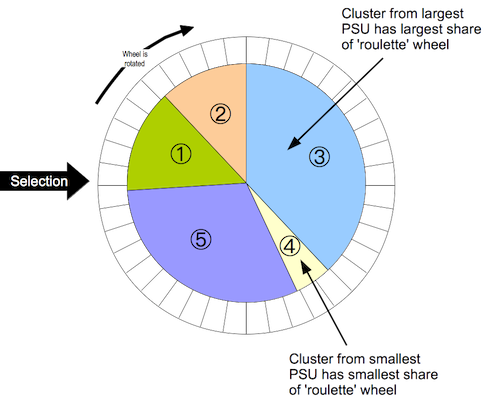

Overview
The blocked weighted bootstrap is an estimation technique for use with data from two-stage cluster sampled surveys in which either prior weighting (e.g. population-proportional sampling or PPS as used in Standardized Monitoring and Assessment of Relief and Transitions (SMART) surveys) or posterior weighting (e.g. as used in Rapid Assessment Method (RAM) and Simple Spatial Sampling Method (S3M) surveys) is implemented.
Installation
You can install bbw from CRAN with:
install.packages("bbw")You can install the current development version of bbw from the RapidSurveys R Universe with:
install.packages("bbw", repos = "https://rapidsurveys.r-universe.dev")or through GitHub via the pak package with:
if(!require(pak)) install.packages("pak")
pak::pak("rapidsurveys/bbw")Usage
bbw as used in RAM and S3M is a modification to the percentile bootstrap to include blocking and weighting to account for a complex sample design.
With RAM and S3M surveys, the sample is complex in the sense that it is an unweighted cluster sample. Data analysis procedures need to account for the sample design. A blocked weighted bootstrap can be used:
Blocked: The block corresponds to the primary sampling unit (PSU = cluster). PSUs are resampled with replacement. Observations within the resampled PSUs are also sampled with replacement.
Weighted: RAM and S3M samples do not use population proportional sampling (PPS) to weight the sample prior to data collection (e.g. as is done with SMART surveys). This means that a posterior weighting procedure is required. bbw uses a “roulette wheel” algorithm (see illustration below) to weight (i.e. by population) the selection probability of PSUs in bootstrap replicates.

In the case of prior weighting by PPS all clusters are given the same weight. With posterior weighting (as in RAM or S3M) the weight is the population of each PSU. This procedure is very similar to the fitness proportional selection technique used in evolutionary computing.
A total of m PSUs are sampled with replacement for each bootstrap replicate (where m is the number of PSUs in the survey sample).
The required statistic is applied to each replicate. The reported estimate consists of the 0.025th (95% LCL), 0.5th (point estimate), and 0.975th (95% UCL) quantiles of the distribution of the statistic across all survey replicates.
The main reason to use bbw is that the bootstrap allows a wider range statistics to be calculated than model-based techniques without resort to grand assumptions about the sampling distribution of the required statistic. A good example for this is the confidence interval on the difference between two medians which might be used for many socio-economic variables. The bbw also allows for a wider range of hypothesis tests to be used with complex sample survey data.
Citation
If you use the {bbw} package in your work, please cite using the suggested citation provided by a call to the citation() function as follows:
citation("bbw")
#> To cite bbw in publications use:
#>
#> Mark Myatt, Ernest Guevarra (2025). _bbw: Blocked
#> Weighted Bootstrap_. doi:10.5281/zenodo.6594797
#> <https://doi.org/10.5281/zenodo.6594797>, R package
#> version 0.2.3, <https://rapidsurveys.io/bbw/>.
#>
#> A BibTeX entry for LaTeX users is
#>
#> @Manual{,
#> title = {bbw: Blocked Weighted Bootstrap},
#> author = {{Mark Myatt} and {Ernest Guevarra}},
#> year = {2025},
#> note = {R package version 0.2.3},
#> url = {https://rapidsurveys.io/bbw/},
#> doi = {10.5281/zenodo.6594797},
#> }Community guidelines
Feedback, bug reports, and feature requests are welcome; file issues or seek support here. If you would like to contribute to the package, please see our contributing guidelines.
This project is released with a Contributor Code of Conduct. By contributing to this project, you agree to abide by its terms.